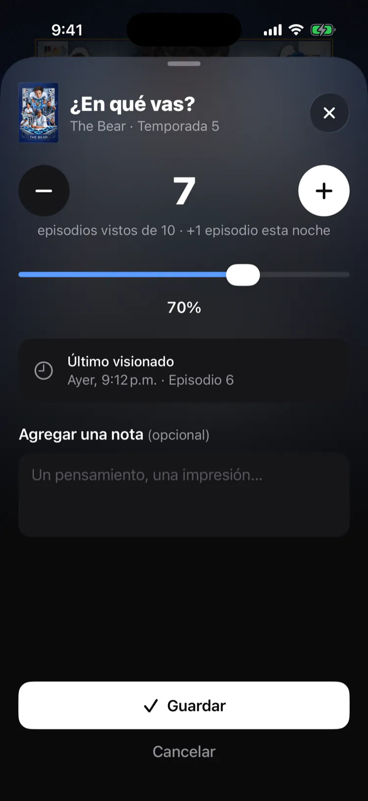
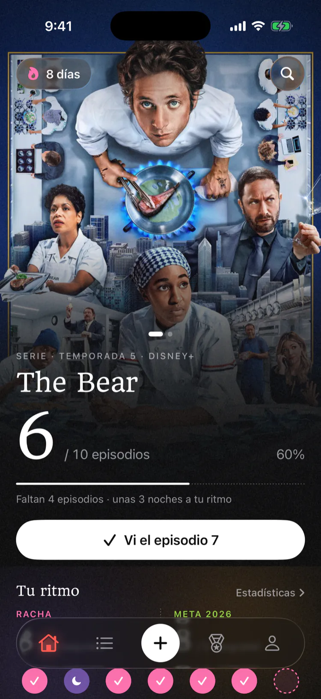
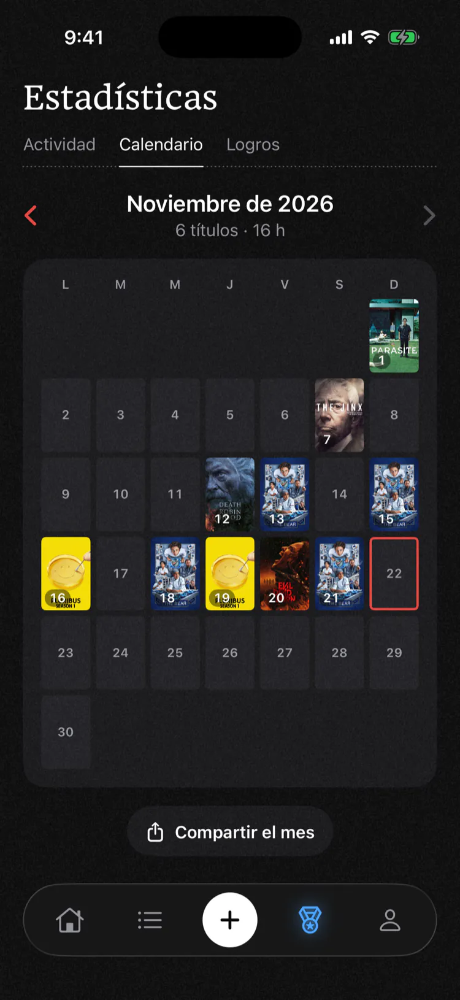

Una app para seguir tus series, episodio a episodio
Última actualización: 21 de noviembre de 2026
Porcom es una app gratuita para seguir tus series en iPhone: anota cada episodio con un toque, sigue cada temporada por separado y ve tus horas de pantalla. Sin cuenta, sin anuncios, sin suscripción.

Un toque después de cada episodio
Toca Continue cuando salgan los créditos, o elige el episodio en el que vas. Cada actualización se guarda como una sesión, con su fecha.
La serie de esta noche, a la vista
La pantalla de inicio se abre con lo que ves esta noche y tu progreso. ¿Nada en curso? Porcom te sugiere una idea para esta noche.

Cada temporada tiene su página
Porcom sigue las series temporada por temporada: cada una tiene su póster, su tráiler, sus fechas y su veredicto, y las temporadas de una misma serie se agrupan en su propia página.

Un calendario de cada episodio
Cada sesión queda en tu calendario, día a día: ves de un vistazo cuándo te devoraste una temporada entera.

Horas de pantalla y rachas
Tus horas de pantalla por semana, mes o año, por plataforma y por género, una meta anual y una racha que perdona un día perdido por semana.

Gratis y privado
Porcom funciona sin cuenta. Tu diario se queda en tu iPhone y en tu iCloud privado, al que no tenemos acceso. La app está en inglés y francés.
Descarga Porcom en el App Store: gratis, sin cuenta, sin anuncios y sin suscripción.
Preguntas
Consulta las preguntas frecuentes o visita el soporte.